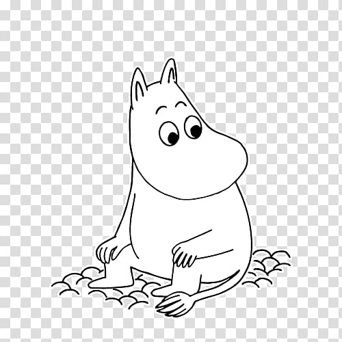
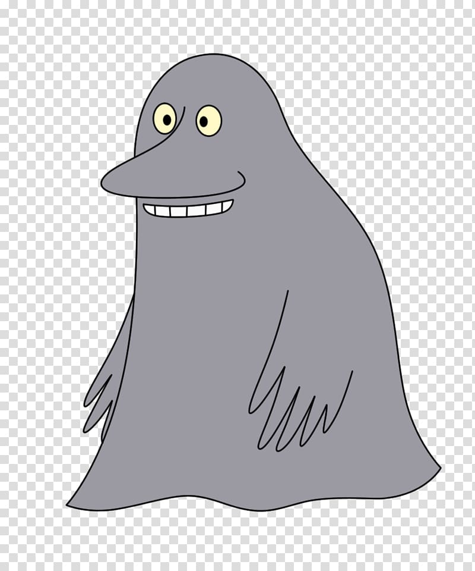
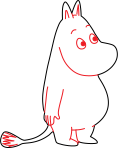
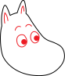
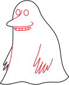
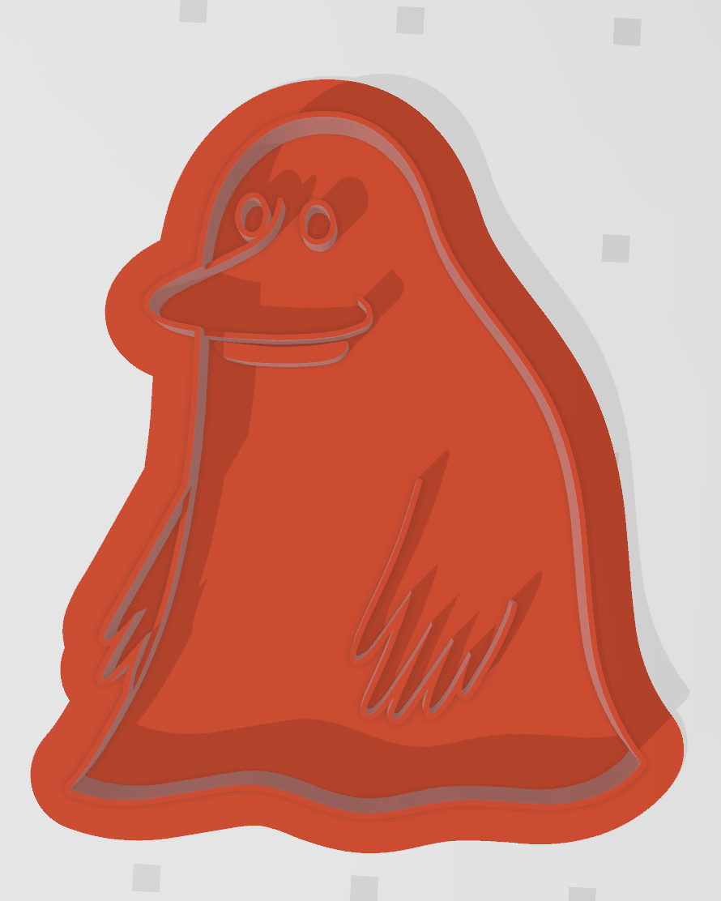

1. First, I searched online to find moomintroll images that would work as cutters. I decided on creating a full moomin cutter, a moomin head cutter, and a groke cutter. Here are the images I found:
 2. For each image, I used Illustrator's image trace feature to convert the image to a line drawing. Using a line drawing allows me to have simple paths to work with, rather than filled shapes.
3. I edited the line drawing by removing control points. I added two layers, one for internal features and one for the external contour. As you can see in the image below, I colored the internal features red so I could easily see them.
  4. I exported the illustrator files as SVGs, and imported them into Rhino.
5. In order to create the walls of the cutters, I needed to give the paths a thickness. I did this by creating an offset path for each curve that makes up the SVG.
6. I extruded the paths according to whether they were internal or external features. I extruded the external wall 0.5 inches and internal features 0.3 inches. Ideally, I would 3D print one with these distances and modify them as needed to get well-defined internal features.
7. Finally, I added a raft to the whole cutter to support the wall features. I did this by creating an offset of the external wall and extruding the curve 0.1 inches.
8. Done! Export as an STL. (Rhino files here, STLs here) The final Groke cutter is below. I'd like to try this out on some cookie dough. I might need to add holes for air to escape while the cutter is cutting. I also might need to play around with the wall thicknesses to get ones that make sense for my print settings and the properties of cookie dough.
